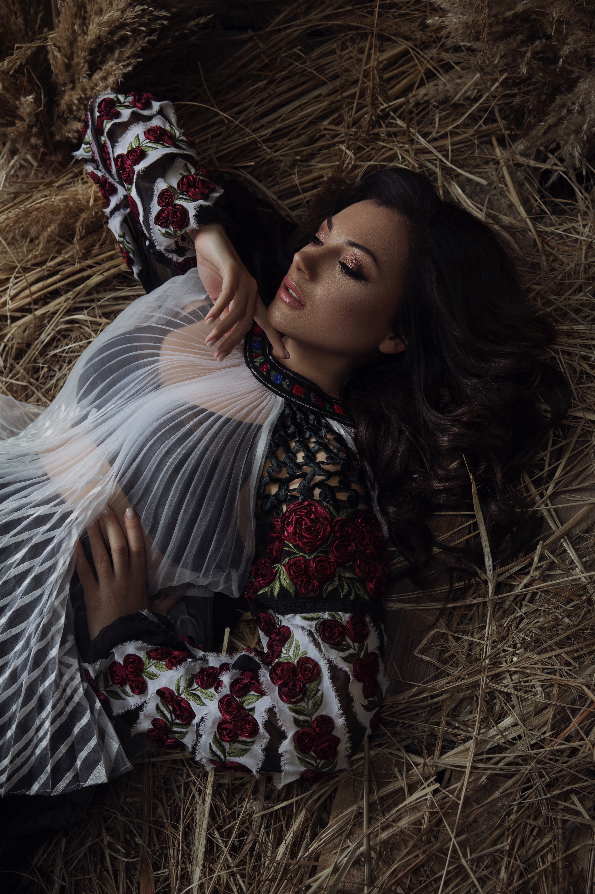
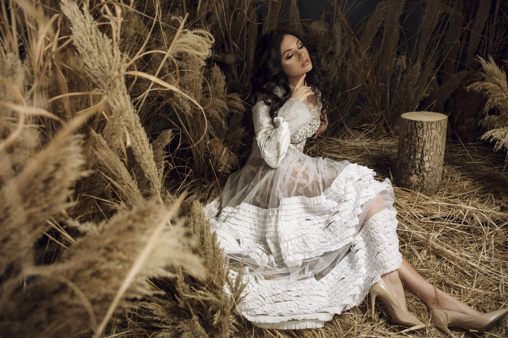
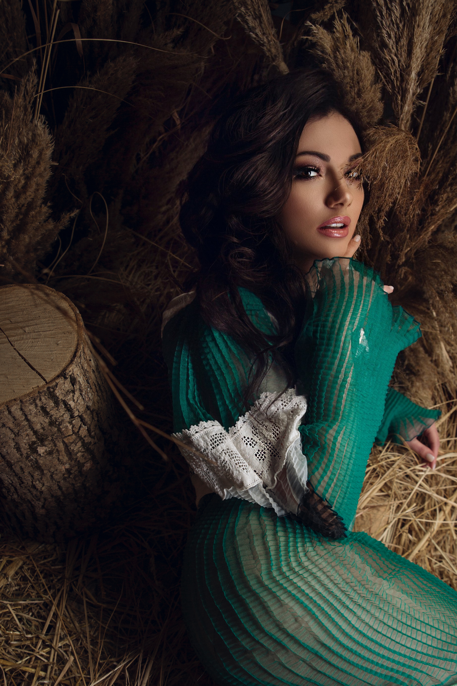
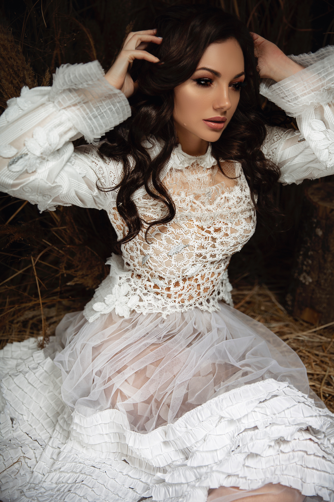

Ana Danch Project – Preparatory Photo Session (March 2020)

Basic Information
| Person | Uliana Latyk |
| Project | Ana Danch |
| Material Type | Preparatory Photo Session |
| Period | March 2020 |
| Exact Date | Unknown |
| Project Phase | Preparatory Period |
| Photographer | Nataliia Hozhelnyk (Наталія Гожельник) |
| Studio | NL Studio Lviv |
| Project Producer | Oleksandr Serhiyovych Danchul (Олександр Сергійович Данчул) |
| Archive Category | Photos / Photo Session |
| Preserved Materials | Five photographs |
Description
This archival record documents a March 2020 preparatory photo session with Uliana Latyk, created during the early development of the Ana Danch music project.
The idea for the Ana Danch project emerged at the beginning of 2020 following a prolonged creative break. The project was conceived as a new stage in Uliana Latyk's artistic career and was intended to bring together songs from her previous periods of activity under different stage names while also providing a new identity for future music under the name Ana Danch.
The concept of the project included several directions: preserving and returning to Uliana's earlier songs, creating new interpretations of Ukrainian folk songs, and developing new author's songs and compositions created in collaboration with other authors and musicians in Ukrainian, English and other languages.
The producer of the Ana Danch project was Oleksandr Serhiyovych Danchul (Олександр Сергійович Данчул), who at that time was Uliana's future husband.
Two photo sessions were created during the preparatory period of the project: the first in March 2020 and the second in November 2021. This archival record documents the first of those sessions.
Photography for the March 2020 session is credited to Nataliia Hozhelnyk (Наталія Гожельник) of NL Studio Lviv.
Archive Information
| Name at the Time | Uliana Latyk |
| Project Name | Ana Danch |
| Project Development Began | Beginning of 2020 |
| Photo Session Period | March 2020 |
| Exact Date | Unknown |
| Project Phase | Preparatory Period |
| Project Producer | Oleksandr Serhiyovych Danchul (Олександр Сергійович Данчул) |
| Public Launch of Ana Danch Project | 16 November 2021 |
| Number of Preserved Photographs | 5 |
| Archive Category | Photos / Photo Session |
Credits
| Subject | Uliana Latyk |
| Project | Ana Danch |
| Photography | Nataliia Hozhelnyk (Наталія Гожельник) |
| Studio | NL Studio Lviv |
| Project Producer | Oleksandr Serhiyovych Danchul (Олександр Сергійович Данчул) |
Source Information
| Source Type | Original Photographic Material |
| Material Type | Preparatory Photo Session |
| Period | March 2020 |
| Exact Date | Not identified |
| Photographer | Nataliia Hozhelnyk (Наталія Гожельник) |
| Studio | NL Studio Lviv |
| https://www.instagram.com/nlstudio_lviv/ | |
| Preserved Photographs | 5 |
Archive Materials
Ana Danch project preparatory photo session, March 2020. Uliana Latyk. Photograph 1 of 5.

Ana Danch project preparatory photo session, March 2020. Uliana Latyk. Photograph 2 of 5.

Ana Danch project preparatory photo session, March 2020. Uliana Latyk. Photograph 3 of 5.

Ana Danch project preparatory photo session, March 2020. Uliana Latyk. Photograph 4 of 5.

Ana Danch project preparatory photo session, March 2020. Uliana Latyk. Photograph 5 of 5.
Notes
This photo session documents the early preparatory stage of the Ana Danch project in March 2020. At the time of the session, the singer is documented in the archive under the name Uliana Latyk.
The Ana Danch project was conceived as a continuation and consolidation of Uliana's previous artistic activity while establishing a new stage for future releases under the Ana Danch name.
The project was planned to encompass earlier songs from Uliana's career, new interpretations of Ukrainian folk songs, and new author's songs and collaborations in Ukrainian, English and other languages.
The project was produced by Oleksandr Serhiyovych Danchul (Олександр Сергійович Данчул).
The global COVID-19 pandemic caused the planned launch of the project to be postponed several times. The Ana Danch project ultimately launched on 16 November 2021, the singer's birthday.
Photography for this March 2020 session is credited to Nataliia Hozhelnyk (Наталія Гожельник) of NL Studio Lviv.
The exact day of the photo session within March 2020 has not been confirmed and is therefore not supplied by assumption.
Five photographs from this photo session are preserved in the Ana Danch Archive and are presented together as one archival record.